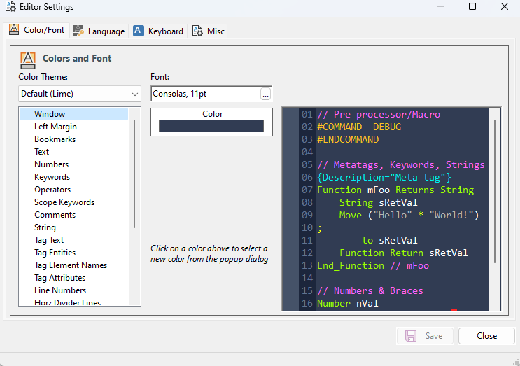
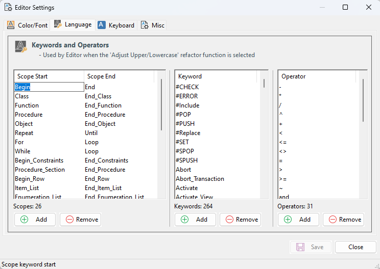
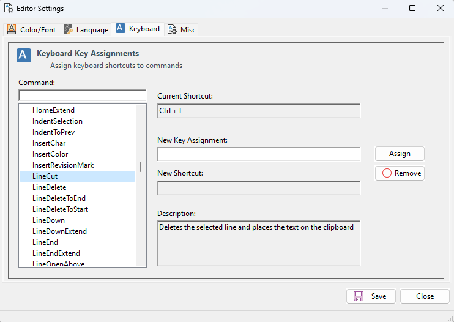
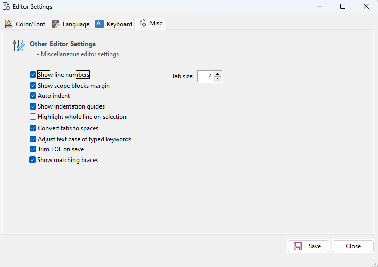

Editor Settings
The Editor Settings dialog (opened from the toolbar, Alt+D) configures the Scintilla editor used by the Editor view. The Scintilla editor is what Editor-type refactoring functions (EditorReIndent, EditorNormalizeCase) operate against, so these settings have a direct effect on those functions' output.

Colors and Font
Choose a color theme for the editor, or set individual colors per syntax element. Click the ... button next to the Font control to select a font.

Keywords and Operators
Three editable lists:
- Scoped Words (Start/End pairs such as Begin/End, Object/End_Object)
- Keywords
- Operators
These values are read at program startup and held in string-array properties used by the refactoring engine. Editing them has a profound effect on the refactoring outcome, because tokenization and keyword normalization depend on these lists.
Caution: change these lists only when you understand the consequences. A typical reason to edit is to add a custom command to the Keyword list so that it is treated as a keyword during refactoring (for example, normalized to the casing used elsewhere in your codebase).

Keyboard Key Assignments
Configures keyboard shortcuts for the Scintilla editor. The Scintilla editor used by DFRefactor is independent of DataFlex Studio's CodeMax editor, so its bindings are managed separately. Use this dialog to map shortcuts to match (as closely as practical) the bindings you use in Studio.

Other Editor Settings
Miscellaneous editor preferences. Hover over each checkbox for an explanation.
Tab Size. The number of spaces used for each indent level. This setting is important for EditorReIndent, which uses it to determine indentation when reflowing code. The same setting is exposed on the Function List grid — find the EditorReIndent row, double-click its Parameter column, and choose a tab size between 1 and 8 (default: 4).